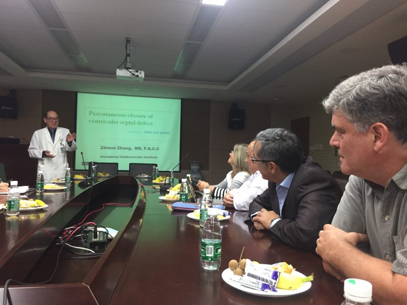

医学无国界，交流促发展。2017年3月13日至15日，先健科技公司LKEP(LifeTech Knowledge Exchange Program)国际学术交流项目邀请阿根廷当地著名的心血管专家走进广东省人民医院心研所，与国内顶尖专家就先心病介入治疗进行国际友好学术交流。
阿根廷医生一行受到了先健科技公司和广东省人民医院心研所的热烈欢迎。3月13日下午，广东省人民医院心研所的张智伟主任首先就此次国际学术交流活动致开幕词。张主任对阿根廷医生的到访以及先健科技公司对此次国际学术交流活动的组织表示感谢，并表示国际学术交流有利于拓宽视野，促进医疗技术水平的提升与发展。

接下来，张主任与阿根廷医生分享了其在腹周部室间隔缺损介入治疗上的临床经验和操作技巧，以及其在膜周部室间隔缺损介入治疗上的器械选择和应用心得。随后，先健科技公司临床支持经理，来自美国的Mark McDonough先生在以《超声及仪器技术进展》为主题的演讲中与大家分享了他在临床超声领域深厚的经验积累，并向大家仔细的讲解了如何利用超声影像技术对结构性心脏疾病进行诊断与识别。最后，远道而来的阿根廷医生通过案例分享的形式向大家介绍了其在先心病介入治疗上的经验以及相关器械的使用心得，并肯定了先健科技公司的先心病封堵器柔软的特性，在应用于室间隔封堵时能够有效降低三度传导阻滞。
3月14日，张智伟主任向阿根廷专家演示了七台先天性心脏病介入手术，包括两台房间隔缺损封堵手术、三台室间隔缺损封堵手术和两台动脉导管未闭封堵手术。七台手术全部使用先健科技公司自主研发的封堵器产品。其中一位先心病人情况较为复杂，为室间隔多孔缺损且缺损位置非常接近主动脉瓣。面对该挑战性病例张主任十分娴熟的将先健科技室间隔封堵器植入病人缺损位置，并巧妙的避开了病人的主动脉瓣。术后造影显示，病人室间隔封堵完全，无残余分流。张主任精湛的医术和先健科技产品卓越的性能是手术成功的重要保证，阿根廷医生一行对先健科技公司产品在先心病治疗中的优势给予了高度评价。

手术演示结束后，张智伟主任还饶有兴趣的为四位阿根廷医生取起了中文名，并将名字的涵义题字进行赠与。双方均表示此次学术交流非常成功，希望将来能够进一步深化学术交流与合作，积极促进中国与拉美地区在心血管微创介入领域的技术进步和科学发展。
为期三天的学术交流活动在友好、轻松的氛围下圆满结束。作为国际学术交流的使者，先健科技公司一直致力于为全球临床专家搭建心血管微创介入学术交流平台，让宝贵的医学经验和诊疗技巧得以分享和传播，让更多国家和地区的医生掌握行业前沿技术和诊疗技巧，从而让更多的患者获得安全有效的治疗。
关于LKEP：
LifeTech Knowledge Exchange Program，简称LKEP，始于2012年，是先健科技公司面向全球临床专家搭建的心血管微创介入学术交流平台，旨在世界范围内分享和传播宝贵的医学经验和诊疗技巧，促进心血管微创介入领域前沿科学的发展。目前，先健科技公司一共为中国、希腊、土耳其、俄罗斯、哈萨克斯坦、印尼、泰国、马来西亚、阿根廷等多个国家和地区的心血管介入专家成功举办近40场LKEP国际学术交流活动，覆盖200多名专业人士。通过LKEP平台，让来自世界各国的专家们打破地域、文化、语言等障碍，相互学习、共同进步，升华友谊，共同推动全球心血管微创介入领域医疗技术水平的发展。